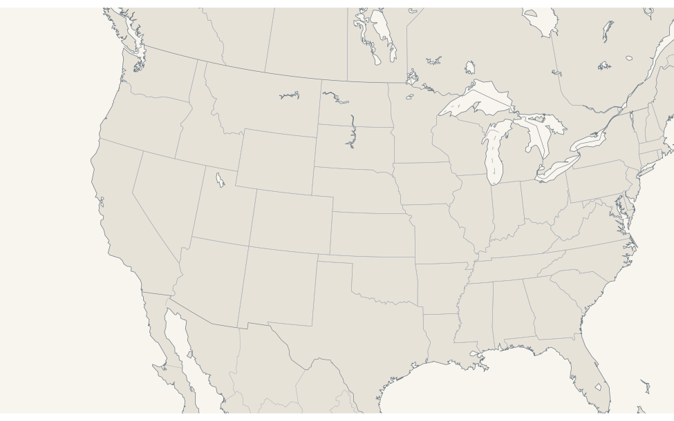

  <main class="urban-map-demo">
    <article class="urban-future" data-urban-future>
      <div class="urban-future__intro">
        <div>
          <span class="eyebrow">Projected total population · 2025–2041</span>
          <h3>The urban map is likely to keep shifting through 2041.</h3>
        </div>
        <div class="urban-future__copy">
          <p>United Nations World Urbanization Prospects 2025 provides annual population projections for cities and urban centres through 2050. Among the 346 U.S. centres with comparable values in both 2025 and 2041, 287 are projected to grow. The largest numeric gains are concentrated in Houston, Los Angeles, San Antonio, Austin, and Phoenix.</p>
          <aside class="urban-future__caution"><strong>Do not read this as an enrollment forecast.</strong> These are UN-defined cities or urban centres, not U.S. Census metropolitan statistical areas. The figures describe total population, not college-age population, student migration, or institution-level demand.</aside>
        </div>
      </div>

      <div class="urban-future__metrics" aria-label="Urban-centre projection summary">
        <div><strong>287 of 346</strong><span>comparable U.S. urban centres are projected to grow from 2025 to 2041</span></div>
        <div><strong>+11.4%</strong><span>aggregate projected growth across centres with values in both years</span></div>
        <div><strong>+1.07m</strong><span>Houston’s projected gain, the largest numeric increase in the dataset</span></div>
      </div>

      <div class="urban-future__controls" role="group" aria-label="Choose urban projection view">
        <button type="button" data-urban-mode="size" aria-pressed="true">2041 population</button>
        <button type="button" data-urban-mode="growth" aria-pressed="false">2025–2041 change</button>
      </div>

      <div class="urban-future__layout">
        <div>
          <div class="urban-future__map" data-urban-map>
            
            <div class="urban-future__points" data-urban-points></div>
            <div class="urban-future__labels" data-urban-labels></div>
            <div class="urban-future__tooltip" data-urban-tooltip></div>
          </div>
          <p class="urban-future__caption" data-urban-caption></p>
        </div>

        <aside class="urban-future__detail" aria-live="polite">
          <span class="mini-label">Selected urban centre</span>
          <h4 data-urban-detail-name>New York City</h4>
          <p class="urban-future__detail-status" data-urban-detail-status></p>
          <div class="urban-future__detail-grid">
            <div><span>2025 population</span><strong data-urban-detail-2025></strong></div>
            <div><span>2041 population</span><strong data-urban-detail-2041></strong></div>
            <div><span>Projected change</span><strong data-urban-detail-change></strong></div>
          </div>
          <p class="urban-future__detail-note" data-urban-detail-note></p>
          <ol class="urban-future__ranking" data-urban-ranking></ol>
        </aside>
      </div>

      <p class="urban-future__source">Source: <a href="https://population.un.org/wup/downloads?tab=Cities">United Nations, Department of Economic and Social Affairs, Population Division, World Urbanization Prospects 2025, F21</a>. The 2041 values are direct annual projections from the source workbook, not interpolations. The normalized records are included in <code>data/us_urban_centres_2041.json</code> and <code>data/us_urban_centres_2025_2041.csv</code>.</p>
    </article>
  </main>
